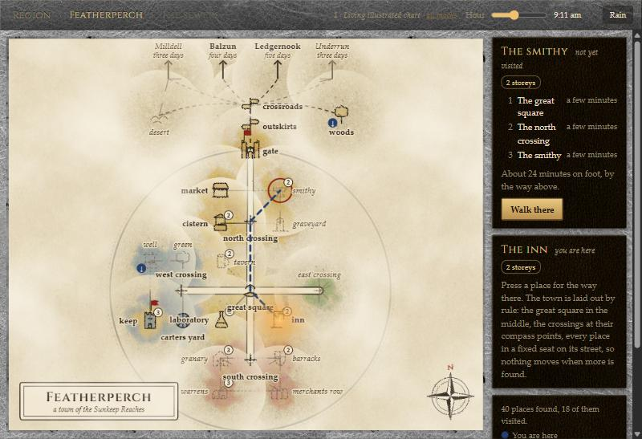
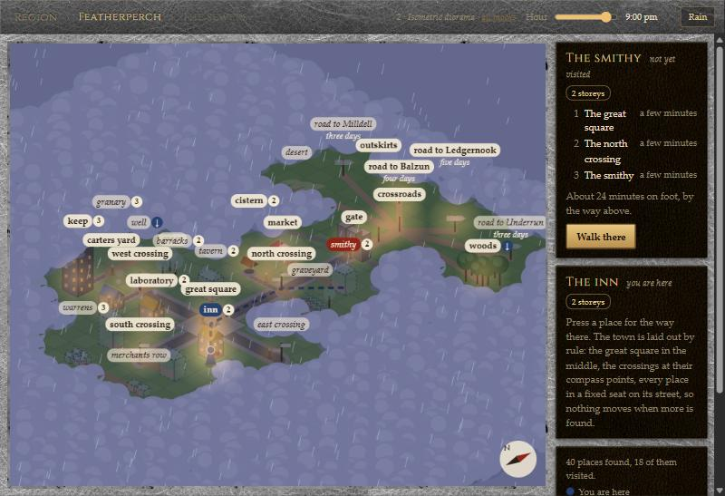
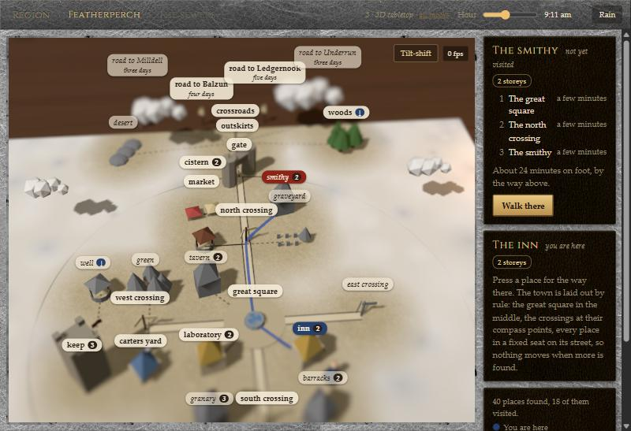

The place map, three ways
Featherperch from jack's save (40 places found, 18 walked), its region, and two real sites: the cave in its woods and frag's sewers. Each mock is clickable through Region › Town › Site. Press a place for the way there, then Walk there. The hour slider and Rain change the light.

Living illustrated chart
Ink on the game's own chart paper, watercolour wards, fog as drifting cloud. SVG, no library.

Isometric diorama
Little houses on tiles, people on the streets, cloud lifting off what you find. Canvas 2D.

3D tabletop
Miniatures on a parchment map on a wooden table, candlelit. Three.js, vendored for the offline app.
Current against proposed
The map as 0.4.2 draws it beside any of the three, fed the same exported chart.
Data: data/*.json, written by export.py from copies of the owner's saves through
play/places_found.chart() and exits.ways_from(). The page replays the fog and route rules and checks
itself against the engine's own answer on load (see the console).